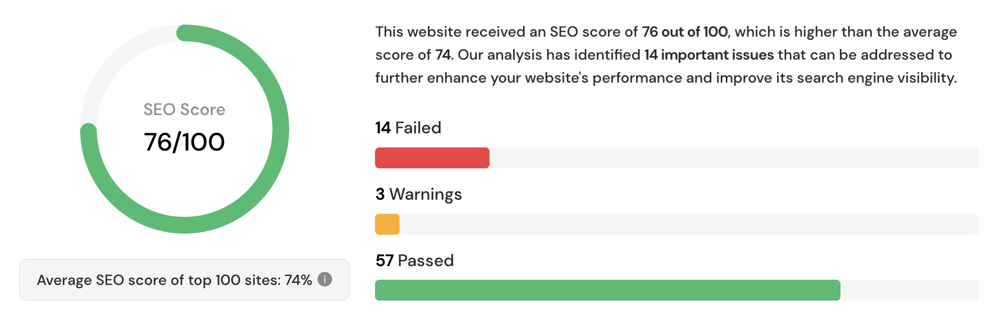

Observable: SEO optimization
If you're reading this, you should know you are looking at a website generated thanks to Observable. I can't express how much I love this platform. I get to write code, markdown pages, creative sketches all in one place. So I wanted to see how visible it would be to the world, with some SEO benchmarks.
At time of writing, their documentation is a bit sparse on the subject, so I'll be experimenting a bit to improve the SEO rating of this website.
Determining the baseline
To begin, we will use a tool called SEO Site Checkup to determine the current SEO rating of the website. It's a free tool that provides a quick overview of the website's SEO performance.
After running the tests, we obtained a score of 76/100.
First impressions: not bad.

I've listed the key recommendations below, click below to see the full details.
Now that we've established the baseline, let's dive into some key areas for improvement.
Meta tags
Observable supports customization of the <head> tag through a custom header function in it's configuration file.
This function has access to the yaml front matter of each page, which is where we can store the information of our meta tags.
For example, this is how we can define the meta tags for this page:
---
keywords: seo, observablehq, web
description: Improving the SEO rating of an Observable website
---
This is what we'll use to add our custom tags:
// observablehq.config.ts
export default {
title: "Tronicart",
// Other configurations...
head: ({ title, data, path }) => {
// Some sensible default values
const keywords = new Set(["creative", "code", "art", "github"])
const { description = "Creative coding and art", keywords: kw = [] } = data
for (const k in kw) {
keywords.add(k)
}
// Return the head html
return `
<meta name="description" content="${description}">
<meta name="keywords" content="${[...keywords].join(", ")}">
`
},
}
Google analytics
SEO ratings are also influenced by the presence of Google Analytics on the website. This can be achieved with a simple addition to the <head> using the same method as we did before:
First, we'll create a small helper in our configuration file:
const GA_SCRIPT = () => {
const GA_ID = process.env.GA_ID ?? ""
if (!GA_ID) {
return ""
}
return `
<!-- Google tag (gtag.js) -->
<script async src="https://www.googletagmanager.com/gtag/js?id=${GA_ID}"></script>
<script>
window.dataLayer = window.dataLayer || [];
function gtag(){dataLayer.push(arguments);}
gtag('js', new Date());
gtag('config', '${GA_ID}');
</script>
`
}
Next we can include this in our head function:
// observablehq.config.ts
export default {
title: "Tronicart",
// Other configurations...
head: ({ title, data, path }) => {
// ... variables
return `
<meta name="description" content="${description}">
<meta name="keywords" content="${[...keywords].join(", ")}">
${GA_SCRIPT()}
`
},
}
Sitemap and robots.txt
At time of writing, Observable does not appear to support sitemaps or robots.txt files. This is a bit of a bummer, but we can work around it. The observable config object already contains a list of all the pages in the website, so we can use that to generate a sitemap.
Let's start by creating a custom script that will add a sitemap to the final build:
import config from "observablehq.config"
async function generateSitemap() {
const { pages } = config;
// Generate sitemap using pages
}
async function generateRobotsTxt() {
// Generate robots.txt
}}
generateSitemap().then(() => generateRobotsTxt())
Next, let's create an npm script to run this script, and hook it to the build method
{
"scripts": {
// Other scripts...
"sitemap": "node generate-sitemap.js",
"postbuild": "npm run sitemap"
}
}
And voila ! We now have a sitemap and robots.txt file generated for our website.
Report details
Here are the key recommendations from the SEO Site Checkup report:
High Add a meta description tag to provide a brief and informative summary of the page's content for search engines.High To ensure that Search Engines can accurately identify the topic of this webpage, it is important to include the most common keywords in the title tag, meta description, and heading tags.High Connect your webpage with social media networks using APIs or AddThis, as social signals are becoming increasingly important for search engines to validate a site's trustworthiness and authority.High To improve the website experience for your visitors, it is recommended to eliminate any render-blocking resources on this webpage.High Consider using structured data in your webpage as it can help search engines gain a better understanding of your content.Medium Add a sitemap file to help search engine crawlers index content more thoroughly and quickly.Medium Add a robots.txt file to properly communicate with web crawlers and prevent unwanted access to sensitive content.Medium Add a Google Analytics script to this website to help in diagnosing potential SEO issues by monitoring site visitors and traffic sources.Medium Using social media meta tags can improve the appearance and content of shared links on social media platforms, potentially increasing click-through rates and engagement with the page.Medium Avoid performance and security issues by adding "rel=noopener" or "rel=noreferrer" to your "target=_blank" links.